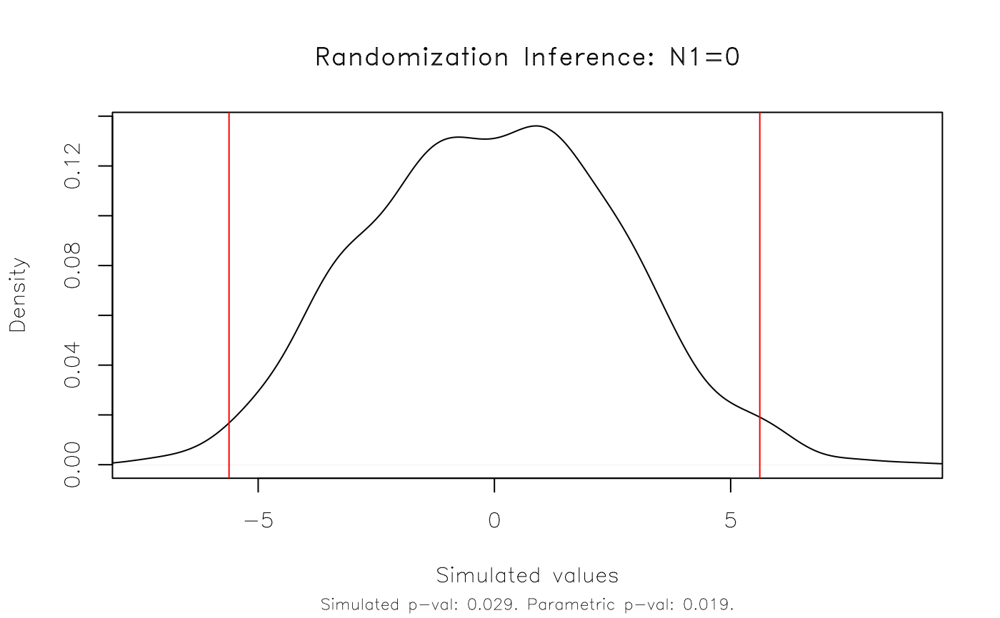
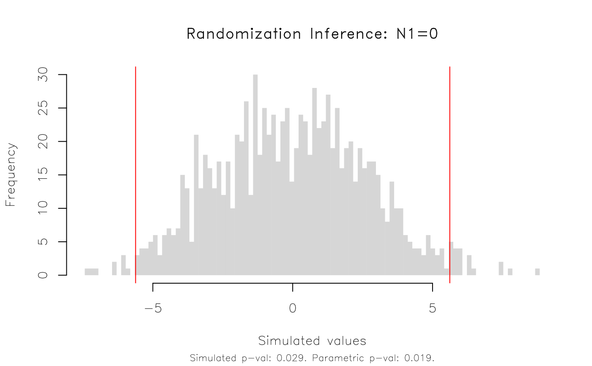
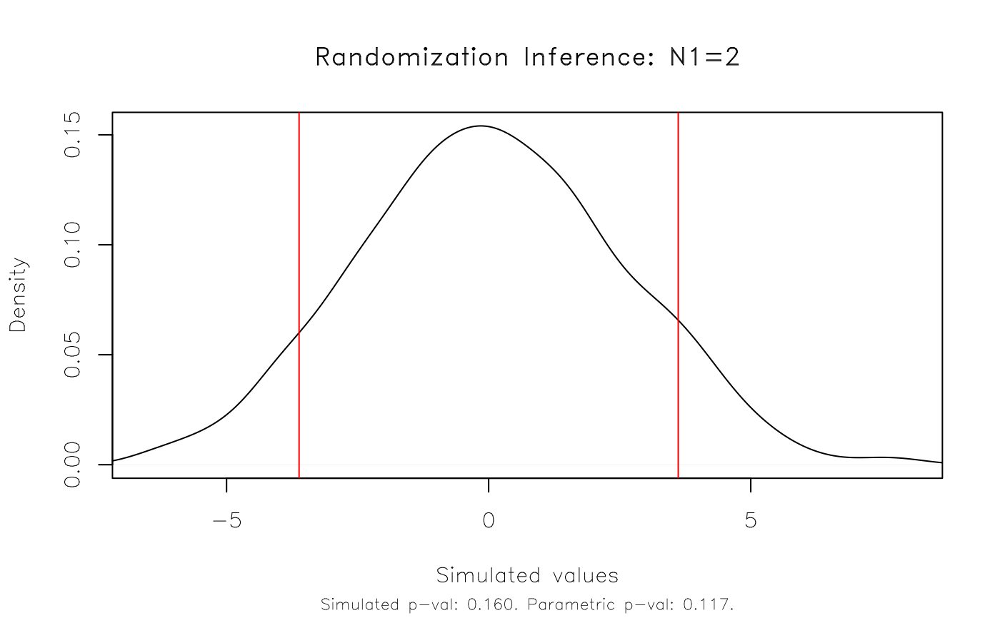
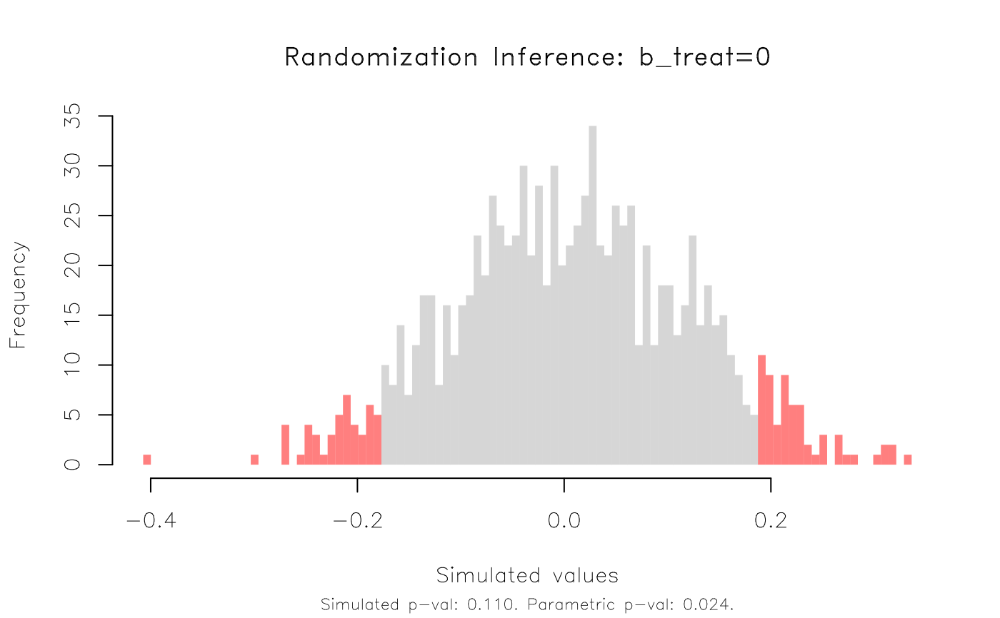

Printed display of ritest objects. Tries to mimic the display of the equivalent Stata routine.
# S3 method for ritest print(x, verbose = FALSE, ...)
| x | An ritest object. |
|---|---|
| verbose | Logical. Should we display the original model summary too? Default is FALSE. |
| ... | Currently ignored. |
# ## Example 1: Basic functionality # # First estimate a simple linaer regression on the base 'npk' dataset. For # this first example, we won't worry about strata or clusters, or other # experimental design complications. est = lm(yield ~ N + P + K, data = npk) # Conduct RI on the 'N' (i.e. nitrogen) coefficient. We'll do 1,000 # simulations and, just for illustration, limit the number of parallel cores # to 2 (default is half of the available cores). The 'verbose = TRUE' # argument simply prints the results upon completion, including the original # regression model summary. est_ri = ritest(est, 'N', reps = 1e3, seed = 1234L, verbose = TRUE) #> #> Running 1000 parallel RI simulations as forked processes across 1 CPU cores. #> #> ****************** #> * ORIGINAL MODEL * #> ****************** #> #> Call: #> lm(formula = yield ~ N + P + K, data = npk) #> #> Residuals: #> Min 1Q Median 3Q Max #> -9.2667 -3.6542 0.7083 3.4792 9.3333 #> #> Coefficients: #> Estimate Std. Error t value Pr(>|t|) #> (Intercept) 54.650 2.205 24.784 <2e-16 *** #> N1 5.617 2.205 2.547 0.0192 * #> P1 -1.183 2.205 -0.537 0.5974 #> K1 -3.983 2.205 -1.806 0.0859 . #> --- #> Signif. codes: 0 ‘***’ 0.001 ‘**’ 0.01 ‘*’ 0.05 ‘.’ 0.1 ‘ ’ 1 #> #> Residual standard error: 5.401 on 20 degrees of freedom #> Multiple R-squared: 0.3342, Adjusted R-squared: 0.2343 #> F-statistic: 3.346 on 3 and 20 DF, p-value: 0.0397 #> #> #> ****************** #> * RITEST RESULTS * #> ****************** #> #> Call: lm(formula = yield ~ N + P + K, data = npk) #> Res. var(s): N1 #> H0: N1=0 #> Num. reps: 1000 #> ──────────────────────────────────────────────────────────────────────────────── #> T(obs) c n p=c/n SE(p) CI 2.5% CI 97.5% #> 5.617 29 1000 0.029 0.008733 0.01464 0.04336 #> ──────────────────────────────────────────────────────────────────────────────── #> Note: Confidence interval is with respect to p=c/n. #> Note: c = #{|T| >= |T(obs)|} #> # Result: The RI rejection rate (0.021) is very similar to the parametric # p-value (0.019). # We can plot the results and various options are available to customise the appearance. plot(est_ri)  plot(est_ri, type = 'hist')  # etc # Aside: By default, ritest() conducts a standard two-sided test against a # sharp null hypothesis of zero. You can can specify other null hypotheses as # part of the 'resampvar' string argument. For example, a (left) one-sided # test... plot(ritest(est, 'N<=0', reps = 1e3, seed = 1234L, pcores = 2L)) # ... or, null values different from zero. plot(ritest(est, 'N=2', reps = 1e3, seed = 1234L, pcores = 2L))  # ## Example 2: Real-life example # # Now that we've seen the basic functionality, here's a more realistic RI # example using data from a randomized control trial conducted in Colombia. # More details on the dataset -- kindly provided by the study authors -- can # be found in the accompanying helpfile ("?colombia"). The most important # thing to note is that we need to control for the stratified (aka "blocked") # and clustered experimental design. data("colombia") # We'll use the fixest package to estimate our parametric regression model, # specifying the strata (here: treatment-control pairs) as fixed-effects and # clustering the standard errors by location (here: city blocks). library(fixest) co_est = feols(dayscorab ~ b_treat + b_dayscorab + miss_b_dayscorab | b_pair + round2 + round3, vcov = ~b_block, data = colombia) #> NOTE: 1,020 observations removed because of NA values (LHS: 1,020). co_est #> OLS estimation, Dep. Var.: dayscorab #> Observations: 2,346 #> Fixed-effects: b_pair: 31, round2: 2, round3: 2 #> Standard-errors: Clustered (b_block) #> Estimate Std. Error t value Pr(>|t|) #> b_treat -0.180738 0.078174 -2.31201 0.024113 * #> b_dayscorab 0.524761 0.029423 17.83478 < 2.2e-16 *** #> miss_b_dayscorab 0.603928 0.264174 2.28610 0.025678 * #> --- #> Signif. codes: 0 '***' 0.001 '**' 0.01 '*' 0.05 '.' 0.1 ' ' 1 #> RMSE: 1.91167 Adj. R2: 0.282038 #> Within R2: 0.266002 # Run RI on the 'b_treat' variable, specifying the strata and clusters. co_ri = ritest(co_est, 'b_treat', strata='b_pair', cluster='b_block', reps=1e3, seed=123L) co_ri #> #> Call: feols(fml = dayscorab ~ b_treat + b_dayscorab + miss_b_dayscorab | b_pair + round2 + round3, data = colombia, vcov = ~b_block) #> Res. var(s): b_treat #> H0: b_treat=0 #> Strata var(s): b_pair #> Strata: 31 #> Cluster var(s): b_block #> Clusters: 63 #> Num. reps: 1000 #> ──────────────────────────────────────────────────────────────────────────────── #> T(obs) c n p=c/n SE(p) CI 2.5% CI 97.5% #> -0.1807 110 1000 0.11 0.01628 0.08322 0.1368 #> ──────────────────────────────────────────────────────────────────────────────── #> Note: Confidence interval is with respect to p=c/n. #> Note: c = #{|T| >= |T(obs)|} #> plot(co_ri, type = 'hist', highlight = 'fill')  # This time, the RI rejection rate (0.11) is noticeably higher than the # parametric p-value (0.024) from the regression model.